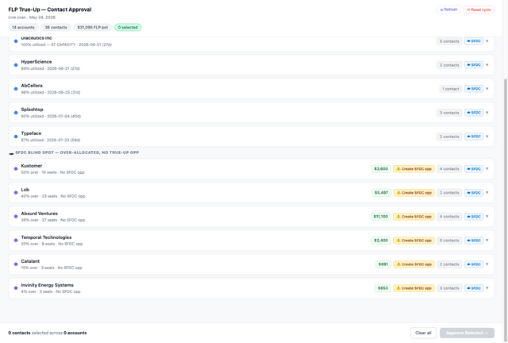
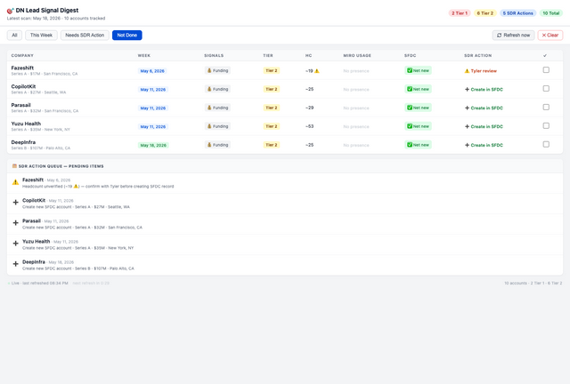

What I Built
Three production workflows.
Diagnosed the problem, designed the solution, determined the logic. Each workflow integrates Snowflake, Salesforce, Gong, and Slack — without writing a line of code.
Build 01
True-Up Scanner
- Surfaces over-allocated accounts and triggers personalized outreach — eliminating manual Salesforce and Looker searching. 100% response rate on all flagged accounts.
- Uncovered a systemic SFDC blind spot: accounts without auto-created true-up opps were invisible to every rep in the org. Flagged as an ARR risk with a proposed fix.
Walkthrough — 3 min
Live Dashboard

$11k
Closed within 1 week
60%
Flagged accounts converted to pipeline or closed
~40 min
Saved per rep/week — timed across 5 reps, not estimated
Build 02
Signal-Based Lead Gen & Router
- Google Alerts and manual Crunchbase list checks were eating ~1 hour every week — and I was still missing signals. Funding rounds would close and I'd find out too late.
- Built a weekly automated scan that fires every Monday: ICP-fit startups that raised in the last 7 days, Salesforce ownership verified via Snowflake, routed to my SDR with context pre-loaded. Zero manual research.
Walkthrough — 1 min
Live Dashboard

$13k
Pipeline in first 2 weeks
7
Meetings booked — 4 with Director+ titles
14
Accounts surfaced in first 2 weeks
1 hr → ~15 min
Weekly lead research time for SDR
Build 03
QBR Builder + Territory Planner
- QBR prep meant exporting 10+ CSVs from Looker, Salesforce, and Gong, spending an hour on quarterly reflection, and context-switching across five tools — a week of work before a single slide was built.
- Built a guided workflow that pulls live Snowflake data, interviews the rep for reflection content, analyzes CSVs, and outputs a fully structured QBR with territory analysis, account prioritization, and pipeline plan — in under an hour.
Walkthrough — 2 min
Miro Output — QBR Frames


~7 hrs → <1 hr
QBR prep time
85%
Reduction in prep time
41–58 min
Total QBR + territory prep across 3 other reps tested